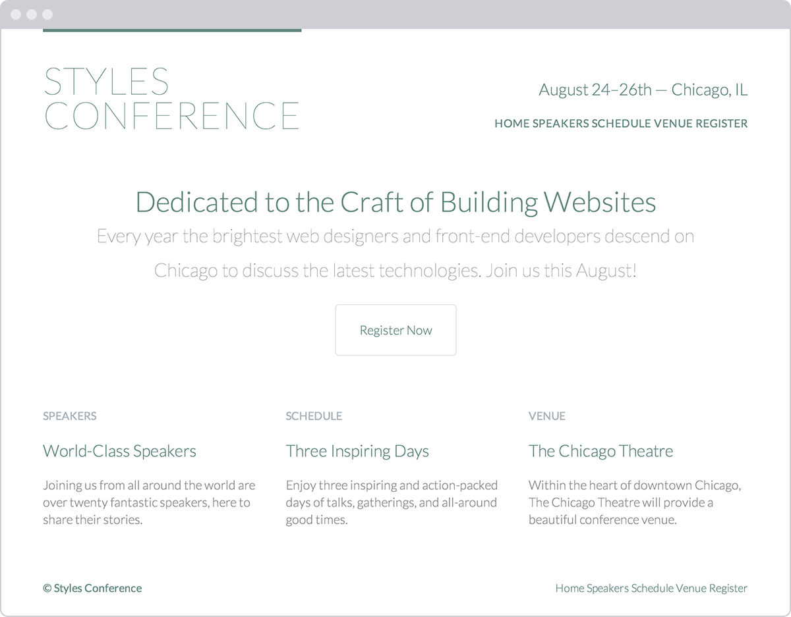

Working with Typography
Typography
The field of web typography has grown substantially over time. There are a couple of different reasons for its rise in popularity; one widely acknowledged reason is the development of a system for embedding our own web fonts on a website.
In the past we were limited to a small number of typefaces that we could use on a website. These typefaces were the most commonly installed fonts on computers, so they were the most likely to render properly on-screen. If a font wasn't installed on a computer, it wouldn't render on the website either. Now, with the ability to embed fonts, we have a much larger palette of typefaces to choose from, including those that we add to a website.
While the ability to embed fonts gives us access to countless new typefaces, it's also important for us to know the basic principles of typography. In this lesson we're going to take a look at some of these basic principles and how to apply them to our web pages using HTML and CSS.
Typeface vs. Font
The terms "typeface" and "font" are often interchanged, causing confusion. Here is a breakdown of exactly what each term means.
A typeface is what we see. It is the artistic impression of how text looks, feels, and reads.
A font is a file that contains a typeface. Using a font on a computer allows the computer to access the typeface.
One way to help clarify the difference between a typeface and a font is to compare them to a song and an MP3. A typeface is very similar to a song in that it is a work of art. It is created by an artist or artists and is open to public interpretation. A font, on the other hand, is very similar to an MP3 in that it is not the artistic impression itself, but only a method of delivering the artistic value.
Adding Color to Text
Typically one of the first decisions we'll make when building a website is choosing the primary typeface and text color to be used. While there are a number of other properties that can be changed—size, weight, and so on—the typeface and text color generally have the largest impact on the look and legibility of a page. Getting rid of the browser defaults and using our own typeface and text color immediately begins setting the tone of our page.
The only property we need to set the color of text is the color
property. The color property accepts one color value, but in many
different formats. These formats, as we discussed in Lesson 3,
тGetting to
Know CSS,т include keywords, hexadecimal values, and RGB, RGBa, HSL,
and HSLa values. Hexadecimal values are the most prevalent, as they
provide the most control with the least amount of effort.
Let's take a look at the CSS required to change the color of all the
text within the <html> element on a page:
html {
color: #555;
}
Changing Font Properties
CSS offers a lot of different properties for editing the look and feel
of text on a page. These properties fit into two categories: font-based
properties and text-based properties. Most of these properties will be
prefaced with either font-* or text-*. To begin we'll discuss the
font-based properties.
Font Family
The font-family property is used to declare which font—as well as
which fallback or substitute fonts—should be used to display text. The
value of the font-family property contains multiple font names, all
comma separated.
The first declared font, starting from the left, is the primary font choice. Should the first font be unavailable, alternative fonts are declared after it in order of preference from left to right.
Font names consisting of two or more words need to be wrapped in
quotation marks. Additionally, the last font should be a keyword value,
which will use the system default font for the specified type, most
commonly either sans-serif or serif.
The font-family property in action looks like this:
body {
font-family: "Helvetica Neue", Helvetica, Arial, sans-serif;
}
In this case, Helvetica Neue is the preferred font to display. If this
font is unavailable or not installed on a given device, the next font in
the list—Helvetica—will be used, and so on.
Font Size
The font-size property provides the ability to set the size of text
using common length values, including pixels, em units, percentages,
points, or font-size keywords.
Here the CSS is setting a font-size of 14 pixels on the <body>
element:
body {
font-size: 14px;
}
Font Style
To change text to italics, or to prevent text from being italicized,
we'll use the font-style property. The font-style property accepts
four keyword values: normal, italic, oblique, and inherit. Of
these four, the most commonly used are italic (sets text to italic)
and normal (returns text to its normal style).
The following CSS sets all elements with a class of special to include
a font-style of italic:
.special {
font-style: italic;
}
Font Variant
It doesn't happen often, but occasionally text will need to be set in
small capitals, also known as small caps. For this specific case we'll
use the font-variant property. The font-variant property accepts
three values: normal, small-caps, and inherit. The most typically
seen values are normal and small-caps, which are used to switch
typefaces between normal and small caps variants.
To switch all elements with a class of firm, we'll use a
font-variant of small-caps:
.firm {
font-variant: small-caps;
}
Font Weight
Occasionally, we'll want to style text as bold or to change the specific
weight of a typeface. For these cases we'll use the font-weight
property. The font-weight property accepts either keyword or numeric
values.
Keyword values include normal, bold, bolder, lighter, and
inherit. Of these keyword values, it is recommended to primarily use
normal and bold to change text from normal to bold and vice versa.
Rather than using the keyword values bolder or lighter, it's better
to use a numeric value for more specific control.
In practice, here's the CSS to set the font-weight to bold for any
element with the class of daring:
.daring {
font-weight: bold;
}
The numeric values 100, 200, 300, 400, 500, 600, 700,
800, and 900 pertain specifically to typefaces that have multiple
weights. The order of these weights starts with the thinnest weight,
100, and scales up to the thickest weight, 900. For reference, the
keyword value of normal maps to 400 and the keyword bold maps to
700; thus, any numeric value below 400 will be fairly thin, and any
value above 700 will be fairly thick.
Changing the font-weight to 600 for any element with the class of
daring now renders that text as semibold—not quite as thick as the
bold keyword value from before:
.daring {
font-weight: 600;
}
Typeface Weights
Before using a numeric value, we need to check and see whether the typeface we are using comes in the weight we'd like to use. Attempting to use a weight that's not available for a given typeface will cause those styles to default to the closest value.
For example, the Times New Roman typeface comes in two weights:
normal, or 400, and bold, or 700. Attempting to use a weight of
900 will default the typeface to the closest related weight, 700 in
this case.
Line Height
Line height, the distance between two lines of text (often referred to
as leading) is declared using the line-height property. The
line-height property accepts all general length values.
The best practice for legibility is to set the line-height to around
one and a half times our font-size property value. This could be
quickly accomplished by setting the line-height to 150%, or just
1.5. However, if we're working with a baseline grid, having a little
more control over our line-height using pixels may be preferable.
Looking at the CSS, we're setting a line-height of 22 pixels within
the element, thus placing 22 pixels between each line of text:
body {
line-height: 22px;
}
Line height may also be used to vertically center a single line of text
within an element. Using the same property value for the line-height
and height properties will vertically center the text:
.btn {
height: 22px;
line-height: 22px;
}
This technique may be seen with buttons, alert messages, and other single-line text blocks.
Shorthand Font Properties
All of the font-based properties listed earlier may be combined and
rolled into one font property and
shorthand
value. The font property can accept multiple font-based property
values. The order of these property values should be as follows, from
left to right: font-style, font-variant, font-weight, font-size,
line-height, and font-family.
As a shorthand value, these property values are listed from left to
right without the use of commas (except for font names, as the
font-family property value uses commas). A forward slash, /,
separator is needed between the font-size and line-height property
values.
When using this shorthand value, every property value is optional
except the font-size and font-family property values. That said,
we can include only the font-size and font-family property values in
the shorthand value if we wish.
html {
font: italic small-caps bold 14px/22px "Helvetica Neue", Helvetica, Arial, sans-serif;
}
Font Properties All Together
Let's take a look at an example that uses all these font-based
properties together. The following HTML and CSS demonstrates the
different possibilities when styling text.
<link href='http://fonts.googleapis.com/css?family=Lobster' rel='stylesheet' type='text/css'> <h2><a href="#">I Am a Builder</a></h2> <p class="byline">Posted by John Smith</p> <p class="intro">Every day I see designers and developers working alongside one another. They work intelligently in pursuit of business objectives. They work diligently making exceptional products. They solve real problems and take pride in their work. They are builders. <a href="#">Continue…</a></p>
body {
font: 13px/20px "Lobster", "Comic Sans", cursive;
}
h2,
p {
color: #555;
}
a {
color: #0087cc;
}
a:hover {
color: #ff7b29;
}
h2 {
font-size: 22px;
font-weight: bold;
letter-spacing: -.02em;
margin-bottom: 6px;
}
h2 a {
text-decoration: none;
text-shadow: 2px 2px 1px rgba(0, 0, 0, .2);
}
.byline {
color: #9799a7;
margin-bottom: 18px;
}
.intro {
text-indent: 15px;
}
.intro a {
font-size: 11px;
font-weight: bold;
text-decoration: underline;
text-transform: uppercase;
}
CSS Pseudo-Classes
The demonstration here uses the :hover CSS pseudo-class, something
we've never seen before. For reference, pseudo-classes are keywords that
may be added to the end of a selector to style an element when it's in a
unique state.
The :hover pseudo-class styles an element when a user hovers over that
element. When used with the <a> element, as shown here, all <a>
elements will receive unique styles when they are hovered over. Now our
<a> elements will change color upon being hovered over.
In Practice
Diving back into our Styles Conference website, let's start adding some font-based properties.
- We'll begin by updating the font on all of our text. To do this,
we'll apply styles to our
<body>element. We'll start with acolor, and we'll also add infont-weight,font-size,line-height, andfont-familyvalues by way of thefontproperty and shorthand values.In an attempt to keep our
main.cssfile as organized as possible, let's create a new section for these custom styles, placing it just below our reset and above our grid styles.We need to add the following:
/* ======================================== Custom styles ======================================== */ body { color: #888; font: 300 16px/22px "Open Sans", "Helvetica Neue", Helvetica, Arial, sans-serif; } - Earlier, we began adding some typographic styles,
specifically adding a bottom
marginto a few different levels of headings and paragraphs. Within the same section of themain.cssfile, let's add a color to the level-one through level-four headings.h1, h2, h3, h4 { color: #648880; }While we're at it, let's also add in font sizes for these different heading levels. Our
<h1>and<h2>elements will use fairly largefont-sizevalues; consequently, we'll also want to increase theirline-heightvalues to keep the text within these elements legible. For reference, we'll make theirline-heightvalues44pixels, double the value of the baseline-heightset within the<body>element rule set.h1 { font-size: 36px; line-height: 44px; } h2 { font-size: 24px; line-height: 44px; } h3 { font-size: 21px; } h4 { font-size: 18px; } - Our
<h5>elements are going to be a little more unique than the rest of our headings. Accordingly, we're going to change their styles a bit.We'll use a different
colorproperty value and a slightly smallerfont-sizefor these elements, and we're going to change thefont-weightto400, ornormal.By default, browsers render headings with a
font-weightof bold. Our headings, however, are currently all set to afont-weightof- Our reset at the top of our
main.cssfile changed the
font-weighttonormal, and then ourfont-weightof300within the<body>element rule set changed all headings to afont-weightof300.The
font-weightof400on the<h5>element will actually make it slightly thicker than the rest of our other headings and text.h5 { color: #a9b2b9; font-size: 14px; font-weight: 400; } - Our reset at the top of our
- Our reset at the beginning of our style sheet also reset the browser
default styles for the
<strong>,<cite>, and<em>elements, which we'll want to add back in. For our<strong>elements we'll want to set afont-weightof400, which actually equates tonormal, notbold, as the typeface we're using is thicker than most typefaces. Then, for our<cite>and<em>elements we'll want to set afont-styleofitalic.strong { font-weight: 400; } cite, em { font-style: italic; } - We're on a roll, so let's keep going by adding some styles to our
anchor elements. Currently they are the browser default blue. Let's
make them the same
coloras our<h1>through<h4>heading elements. Additionally, let's use the:hoverpseudo-class to change thecolorto a light gray when a user hovers over an anchor./* ======================================== Links ======================================== */ a:hover { color: #a9b2b9; } a { color: #648880; } - Now let's take a look at our
<header>element and update our styles there. We'll begin updating our logo by adding thefont-sizeandline-heightproperties within the logo rule set. Adding to the existingborder-top,float, andpaddingproperties, the new rule set should look like this:.logo { border-top: 4px solid #648880; float: left; font-size: 48px; line-height: 44px; padding: 40px 0 22px 0; } - Because we've bumped up the size of the logo quite a bit, let's add
a
marginto the<h3>element within the<header>element to balance it. We'll do so by placing a class attribute value oftaglineon the<h3>element and then using that class within our CSS to apply the proper margins.Let's not forget that the changes to the
<h3>element need to happen on every page.<h3 class="tagline">August 24–26th — Chicago, IL</h3>
.tagline { margin: 66px 0 22px 0; } - After the
<h3>element with the class attribute value of tagline comes the<nav>element. Let's add a class attribute value ofprimary-navto the<nav>element and addfont-sizeandfont-weightproperties to make the navigation stand out against the rest of the header.<nav class="primary-nav"> ... </nav>
.primary-nav { font-size: 14px; font-weight: 400; } - With the
<header>element in slightly better shape, let's also take a look at our<footer>element. Using theprimary-footerclass, let's change thecolorandfont-sizefor all the text within the<footer>element. Additionally, let's bump up thefont-weightof the<small>element to400.Including the existing styles, the styles for our primary footer section should look like this:
.primary-footer { color: #648880; font-size: 14px; padding-bottom: 44px; padding-top: 44px; } .primary-footer small { float: left; font-weight: 400; } - Let's update our home page a bit, too. We'll start with the hero
section, increasing the overall
line-heightof the section to44pixels. We'll also make the text within this section larger, increasing the<h2>element'sfont-sizeto36pixels and the<p>element'sfont-sizeto24pixels.We can make all of these changes by using the existing
heroclass selector and creating new selectors for the<h2>and<p>elements. Our styles for the hero section will now break down in this way:.hero { line-height: 44px; padding: 22px 80px 66px 80px; } .hero h2 { font-size: 36px; } .hero p { font-size: 24px; } - Lastly, we have one small issue to fix on our home page. Previously
we gave all of our anchor elements a light gray color value when a
user hovers over them. This works great, except for within the three
teasers on our home page where the anchor element wraps both
<h3>and<h5>elements. Because the<h3>and<h5>elements have their owncolordefinition, they are not affected by the:hoverpseudo-class styles from before.Fortunately we can fix this, although it's going to require a fairly complicated selector. We'll begin by adding a
classattribute value ofteaserto all three columns on the home page. We'll use this class as a qualifying selector shortly.<section class="grid"> <!-- Speakers --> <section class="teaser col-1-3"> <a href="speakers.html"> <h5>Speakers</h5> <h3>World-Class Speakers</h3> </a> <p>Joining us from all around the world are over twenty fantastic speakers, here to share their stories.</p> </section> ... </section>With a qualifying class in place, we're ready to do some CSS heavy lifting and create a fairly complex selector. We'll begin our selector with the
teaserclass, as we only want to target elements within an element with the class ofteaser. From there we want to apply styles to elements that reside within anchor elements that are being hovered over; thus we'll add the a type selector along with the:hoverpseudo-class. Lastly, we'll add theh3type selector to select the actual<h3>elements we wish to apply styles to.Altogether, our selector and styles for these
<h3>elements will look like this:.teaser a:hover h3 { color: #a9b2b9; }
Whew, that was quite a bit. The good news is that our Styles Conference home page is starting to look really nice and is showing a bit of personality.

Our Styles Conference website has received quite a bit of love from a handful of font-based properties
Applying Text Properties
Knowing how to set the family, size, style, variant, weight, and line height of a font is only half the battle. Additionally we can decide how to align, decorate, indent, transform, and space text. Let's start with text alignment.
Text Align
Aligning text is an important part of building a rhythm and flow on a
page; we do this using the text-align property. The text-align
property has five values: left, right, center, justify, and
inherit. All of these values are fairly straightforward; as expected,
they align text to the left, right, or center, or they justify text.
The following CSS sets all paragraph text to be center aligned:
p {
text-align: center;
}
The text-align property, however, should not be confused with the
float property. The text-align values left and right will align
text within an element to the left or right, whereas the float values
left and right will move the entire element. Sometimes the
text-align property will give us the desired outcome, and other times
we may need to use the float property.
Text Decoration
The text-decoration property provides a handful of ways to spruce up
text. It accepts the keyword values of none, underline, overline,
line-through, and inherit. Use of the text-decoration property
varies, but the most popular use is to underline links, which is a
default browser style.
Here the CSS styles any element with the class of note with a
text-decoration of underline:
.note {
text-decoration: underline;
}
Multiple text-decoration values may be applied to an element at once by space-separating each keyword within the value.
Text Indent
The text-indent property can be used to indent the first line of text
within an element, as is commonly seen in printed publications. All
common length values are available for this property, including pixels,
points, percentages, and so on. Positive values will indent text inward,
while negative values will indent text outward.
Here, the CSS indents the text for all <p> elements inward by 20
pixels:
p {
text-indent: 20px;
}
Text Shadow
The text-shadow property allows us to add a shadow or multiple shadows
to text. The property generally takes four values, all listed one after
the other from left to right. The first three values are lengths, and
the last value is a color.
Within the three length values, the first value determines the shadow's
horizontal offset, the second value determines the shadow's vertical
offset, and the third value determines the shadow's blur radius. The
fourth, and last, value is the shadow's color, which can be any of the
color values used within the color property.
The text-shadow property here is casting a 30% opaque black shadow
3 pixels towards the right, 6 pixels down, and blurred 2 pixels
off all <p> element text:
p {
text-shadow: 3px 6px 2px rgba(0, 0, 0, .3);
}
Using negative length values for the horizontal and vertical offsets allows us to move shadows toward the left and the top.
Multiple text shadows can also be chained together using comma-separated values, adding more than one shadow to the text. Using numerous shadows allows us to place them above and below the text, or in any variation we desire.
Box Shadow
The text-shadow property places a shadow specifically on the text of
an element. If we'd like to place a shadow on the element as a whole, we
can use the box-shadow property.
The box-shadow property works just like the text-shadow property,
accepting values for horizontal and vertical offsets, a blur, and a
color.
The box-shadow property also accepts an optional fourth length value,
before the color value, for the spread of a shadow. As a positive length
value, the spread will expand the shadow larger than the size of the
element it's applied to, and as a negative length value the spread will
shrink the shadow to be smaller than the size of the element it's
applied to.
Lastly, the box-shadow property may include an optional inset value
at the beginning of the value to place the shadow inside an element as
opposed to outside the element.
Text Transform
Similar to the font-variant property, there is the text-transform
property. While the font-variant property looks for an alternate
variant of a typeface, the text-transform property will change the
text inline without the need for an alternate typeface. The
text-transform property accepts five values: none, capitalize,
uppercase, lowercase, and inherit.
The capitalize value will capitalize the first letter of each word,
the uppercase value will capitalize every letter, and the lowercase
value will make every letter lowercase. Using none will return any of
these inherited values back to the original text style.
The following CSS sets all <p> element text to appear in all uppercase
letters:
p {
text-transform: uppercase;
}
Letter Spacing
Using the letter-spacing property, we can adjust the space (or
tracking) between the letters on a page. A positive length value will
push letters farther apart from one another, while a negative length
value will pull letters closer together. The keyword value none will
return the space between letters back to its normal size.
Using a relative length value with the letter-spacing property will
help ensure that we maintain the correct spacing between letters as the
font-size of the text is changed. It is, however, always a good idea
to double-check our work.
With the CSS here, all of the letters within our <p> elements will
appear .5 em closer together:
p {
letter-spacing: -.5em;
}
Word Spacing
Much like the letter-spacing property, we can also adjust the space
between words within an element using the word-spacing property. The
word-spacing property accepts the same length values and keywords as
the letter-spacing property. Instead of spacing letters apart, though,
the word-spacing property applies those values between words.
Here every word within a <p> element will be spaced .25 em apart.
p {
word-spacing: .25em;
}
Text Properties All Together
Let's revisit our blog teaser demonstration from before, this time
adding in a few text-based properties on top of our font-based
properties.
<h2><a href="#">I Am a Builder</a></h2> <p class="byline">Posted by John Smith</p> <p class="intro">Every day I see designers and developers working alongside one another. They work intelligently in pursuit of business objectives. They work diligently making exceptional products. They solve real problems and take pride in their work. They are builders. <a href="#">Continue…</a></p>
h2,
p {
color: #555;
font: 13px/20px "Helvetica Neue", Helvetica, Arial, sans-serif;
}
a {
color: #0087cc;
}
a:hover {
color: #ff7b29;
}
h2 {
font-size: 22px;
font-weight: bold;
letter-spacing: -.02em;
margin-bottom: 6px;
}
h2 a {
text-decoration: none;
text-shadow: 2px 2px 1px rgba(0, 0, 0, .2);
}
.byline {
color: #9799a7;
font-family: Georgia, Times, "Times New Roman", serif;
font-style: italic;
margin-bottom: 18px;
}
.intro {
text-indent: 15px;
}
.intro a {
font-size: 11px;
font-weight: bold;
text-decoration: underline;
text-transform: uppercase;
}
In Practice
With text-based properties under our belts, let's jump back into our
Styles Conference website and put them to work.
- Currently every link on the page is underlined, which is the default
style for anchor elements. This style is a little overbearing at
times, though, so we're going to change it up a bit.
Adding to our links section within our
main.cssfile, we'll begin by removing the underline from all anchor elements by way of thetext-decorationproperty. Next, we'll select all anchor elements that appear within a paragraph element and give them a bottomborder.We could use the
text-decorationproperty instead of theborder-bottomproperty to underline all the links within each paragraph; however, by using theborder-bottomproperty we have more control over the underline's appearance. Here, for example, the underline will be a different color than the text itself.Our links section, which includes our previous hover styles, should look like this:
a { color: #648880; text-decoration: none; } a:hover { color: #a9b2b9; } p a { border-bottom: 1px solid #dfe2e5; } - Going back to our
<h5>elements from before, which have slightly different styles than the rest of the headings, let's make them all uppercase using thetext-transformproperty. Our new<h5>element styles should look like this:h5 { color: #a9b2b9; font-size: 14px; font-weight: 400; text-transform: uppercase; } - Let's revisit our
<header>element to apply additional styles to our navigation menu (to which we previously added theprimary-navclass attribute value). After the existingfont-sizeandfont-weightproperties, let's add some slightletter-spacingand change our text to all uppercase via thetext-transformproperty.Our styles for the
<nav>element with theprimary-navclass attribute value should now look like this:.primary-nav { font-size: 14px; font-weight: 400; letter-spacing: .5px; text-transform: uppercase; } - Previously, we floated our logo to the
leftwithin the<header>element. Now our tagline sits directly to the right of the logo; however, we'd like it to appear all the way to the right of the<header>element, flush right.We need to add the
text-alignproperty with a value ofrightto the<h3>element with the class attribute value oftaglineto get the tagline to sit all the way to the right.When added to the existing
marginproperty, our new styles for the<h3>element with the class attribute value oftaglinewill look like this:.tagline { margin: 66px 0 22px 0; text-align: right; } - We'd also like our navigation menus, both in the
<header>and<footer>elements, to sit flush right. Because both the<header>and<footer>elements have child elements that are floated to theleft, we can use the same approach as we did with our tagline.The floated elements within the
<header>and<footer>elements are taken out of the normal flow of the page, and this causes other elements to wrap around them. In this specific case, our navigation menus are the elements wrapping around the floated elements.Because we'll be sharing the same styles across both navigation menus, we'll give them each the class of
nav. Our<header>element will now look like this:<header class="container group"> <h1 class="logo">...</h1> <h3 class="tagline">...</h3> <nav class="nav primary-nav"> ... </nav> </header>And our
<footer>element will now look like this:<footer class="primary-footer container group"> <small>...</small> <nav class="nav"> ... </nav> </footer>Let's not forget, changes to our
<header>and<footer>elements need to be made on every page. - With the nav class in place on both navigation menus, let's create a
new section within our
main.cssfile to add shared navigation styles. We'll begin by adding thetext-alignproperty with a value ofrightto anavclass rule set. We'll expand these styles later on, but this will serve as a great foundation./* ======================================== Navigation ======================================== */ .nav { text-align: right; } - While we're adding the
text-alignproperty to a few different elements, let's also add thetext-alignproperty with a value ofcenterto ourheroclass selector rule set. For reference, these styles, including our existingline-heightandpaddingproperties, are located within the home page section of ourmain.cssfile..hero { line-height: 44px; padding: 22px 80px 66px 80px; text-align: center; }
Our Styles Conference now has some serious style. Seriously, though, all of our styles are coming along quite well, and our website is progressing.
Our Styles Conference website is coming along quite well after adding a few text-based properties
Using Web-Safe Fonts
By default there are a few fonts that are pre-installed on every computer, tablet, smart-phone, or other web-browsing-capable device. Because they've been installed on every device, we can use these fonts freely within our websites, knowing that no matter what device is browsing our site, the font will render properly. These fonts have become known as "web-safe fonts." There are only a handful of them, and the safest of the web-safe fonts are listed here:
- Arial
- Courier New, Courier
- Garamond
- Georgia
- Lucida Sans, Lucida Grande, Lucida
- Palatino Linotype
- Tahoma
- Times New Roman, Times
- Trebuchet
- Verdana
Embedding Web Fonts
We also have the ability to upload fonts to a server and include them on
a website via the CSS @font-face at-rule. This capability has done
wonders for online typography. Now, more than ever, typography is coming
to life online.
Embedding our own web fonts looks a bit like the following CSS. First,
we use the @font-face at-rule to identify our font's name, via the
font-family property, as well as the source of our font (the path to
the font file containing our chosen font), via the src property. From
there we are able to use this font by including its name within any
font-family property value.
<link href='http://fonts.googleapis.com/css?family=Lobster' rel='stylesheet' type='text/css'> <h2><a href="#">I Am a Builder</a></h2> <p class="byline">Posted by John Smith</p> <p class="intro">Every day I see designers and developers working alongside one another. They work intelligently in pursuit of business objectives. They work diligently making exceptional products. They solve real problems and take pride in their work. They are builders. <a href="#">Continue…</a></p>
body {
font: 13px/20px "Lobster", "Comic Sans", cursive;
}
h2,
p {
color: #555;
}
a {
color: #0087cc;
}
a:hover {
color: #ff7b29;
}
h2 {
font-size: 22px;
font-weight: bold;
letter-spacing: -.02em;
margin-bottom: 6px;
}
h2 a {
text-decoration: none;
text-shadow: 2px 2px 1px rgba(0, 0, 0, .2);
}
.byline {
color: #9799a7;
margin-bottom: 18px;
}
.intro {
text-indent: 15px;
}
.intro a {
font-size: 11px;
font-weight: bold;
text-decoration: underline;
text-transform: uppercase;
}
Having the ability to embed any typeface on a website does not mean we legally have the authority to do so. Typefaces are works of art, and posting them on our server may allow others to easily steal them. The authority to use a typeface depends on the licensing we've been warranted.
Fortunately, the value of using new typefaces online has been recognized, and companies have begun developing ways to license and include new fonts on websites. Some of these companies, like Typekit and Fontdeck, work off a subscription model for licensing fonts, while others, like Google Fonts, license the fonts for free. Before uploading any fonts, let's make sure we have permission to do so.
In Practice
To add a little character to our Styles Conference website, let's try using a Google Font on our website.
- Let's head over to the Google Fonts
website and search for the font we'd like to use: Lato. Once we've
found it, let's proceed with adding it to our collection and
following the steps on their website to use the font.
When the time comes to choose which font weights we'd like to use, let's make sure to select
300and400, as we've already been using those within our CSS. Let's also add100to the collection for another variation, too.Google will give us an additional
<link>element to include in the<head>element of all of our pages. We'll place this new<link>element directly below our existing<link>element. The new element will include the proper style sheet reference to Google, which will take care of including a new CSS file with the proper@font-faceat-rule necessary for us to use the Lato font.With the addition of the new
<link>element, our<head>element will look like this:<head> <meta charset="utf-8"> <title>Styles Conference</title> <link rel="stylesheet" href="assets/stylesheets/main.css"> <link rel="stylesheet" href="http://fonts.googleapis.com/css?family=Lato:100,300,400"> </head>
- Once we have added the new
<link>element to all of our pages, we are ready to begin using the Lato font. We'll do so by adding it to our primary font stack within thefontproperty inside our<body>element styles.Let's add Lato to the beginning of our font stack to make it ="Lato", "Open Sans", "Helvetica Neue", Helvetica, Arial, sans-serif=.
Although Lato is a single word, because it is an embedded web font we'll want to surround it with quotation marks within any CSS reference. Our new
<body>element styles will look like this:body { color: #888; font: 300 16px/22px "Lato", "Open Sans", "Helvetica Neue", Helvetica, Arial, sans-serif; } - Lato should now be up and running, visible in all of our text across
the Styles Conference website. Let's take a closer look at our logo
and update it a bit.
Within our
logoclass selector rule set, we'll begin by adding thefont-weightproperty with a value of100to make the text fairly thin. We'll also use thetext-transformproperty with a value ofuppercaseto make all of the letters uppercase, as well as theletter-spacingproperty with a value of.5pixels to add a tiny bit of space between each letter within the logo.Altogether the styles for our logo will look like this:
.logo { border-top: 4px solid #648880; float: left; font-size: 48px; font-weight: 100; letter-spacing: .5px; line-height: 44px; padding: 40px 0 22px 0; text-transform: uppercase; } - Because we have a
font-weightproperty value of100available, let's also set the paragraph element within our hero section to that weight. We can use the existing selector to do so, and the new rule set will look like this:.hero p { font-size: 24px; font-weight: 100; }
Our Styles Conference website has taken quite a few large steps this lesson, and the look and feel of our website is starting to really shine.
#+NAME : Fig 7.03 
Our Styles Conference home page after adding the Lato Google web font
Including Citations & Quotes
Writing online sometimes involves citing different sources or
quotations. All of the different citation and quotation cases can be
covered semantically in HTML using the <cite>, <q>, and
<blockquote> elements. Because they are usually distinguished from
regular text in appearance, we'll discuss them here in the typography
lesson.
Knowing when to use which element and attribute to properly mark up citations and quotes takes a bit of practice. In general, follow these rules:
<cite>: Used to reference a creative work, author, or resource<q>: Used for short, inline quotations<blockquote>: Used for longer external quotations
Citing a Creative Work
The <cite> inline element is used in HTML to specifically cite a
creative work; the element must include either the title of the work,
the author's name, or a URL reference to the work. By default, content
wrapped within the <cite> element will appear in italics within the
browser.
For additional reference, it helps to include a hyperlink to the original source of the citation when relevant.
Here the book Steve Jobs, by Walter Isaacson, is referenced within the
<cite> element. Inside the citation is also a hyperlink to the book.
<p>The book <cite><a href="http://www.amazon.com/Steve-Jobs-Walter-Isaacson/dp/1451648537">Steve Jobs</a></cite> is truly inspirational.</p>
Dialogue & Prose Quotation
Quite often, dialogue or prose is quoted inline, within other text. For
this purpose, the <q> (or quote) inline element should be applied. The
<q> element semantically indicates quoted dialogue or prose and
shouldn't be used for any other purposes.
By default, the browser will insert the proper quotation marks for us
and will even change the quotation marks based on the language
identified within the lang global attribute.
Here's an example:
<p>Steve Jobs once said, <q>One home run is much better than two doubles.</q></p>
*= Dialogue & Prose Citation
An optional attribute to include on the <q> element is the cite
attribute. The cite attribute acts as a citation reference to the
quote in the form of a URL. This attribute doesn't alter the appearance
of the element; it simply adds value for screen readers and other
devices. Because the attribute isn't viewable within the browser, it's
also helpful to provide a hyperlink to this source next to the actual
quotation.
Here's an example:
<p><a href="http://www.businessweek.com/magazine/content/06_06/b3970001.htm">Steve Jobs</a> once said, <q cite="http://www.businessweek.com/magazine/content/06_06/b3970001.htm">One home run is much better than two doubles.</q></p>
External Quotation
To quote a large block of text that comes from an external source and
spans several lines, we'll use the <blockquote> element. The
<blockquote> is a block-level element that may have other block-level
elements nested inside it, including headings and paragraphs.
Here's an example that uses the <blockquote> element:
<blockquote> <p>“In most people’s vocabularies, design is a veneer. It’s interior decorating. It’s the fabric of the curtains, of the sofa. But to me, nothing could be further from the meaning of design. Design is the fundamental soul of a human-made creation that ends up expressing itself in successive outer layers of the product.”</p> </blockquote>
External Citation
Longer quotes used within the <blockquote> element will often include
a citation. This citation may comprise both the cite attribute and the
<cite> element.
The cite attribute can be included on the <blockquote> element—in
the same way that it was used on the <q> element earlier—to provide
a citation reference to the quote in the form of a URL. The <cite>
element then can fall after the actual quote itself to specify the
original source of the quote, if relevant.
The HTML here outlines an extended quote from Steve Jobs that originally
appeared in Fortune magazine. The quotation is marked up using the
<blockquote> element with a cite attribute to specify where the
quote originally appeared. In the <blockquote> element, the <cite>
element, along with an <a> element, provides an additional citation
and reference for the quote that is visible to users.
<blockquote cite="http://money.cnn.com/magazines/fortune/fortune_archive/2000/01/24/272277/index.htm"> <p>“In most people’s vocabularies, design is a veneer. It’s interior decorating. It’s the fabric of the curtains, of the sofa. But to me, nothing could be further from the meaning of design. Design is the fundamental soul of a human-made creation that ends up expressing itself in successive outer layers of the product.”</p> <p><cite>— Steve Jobs in <a href="http://money.cnn.com/ magazines/fortune/fortune_archive/2000/01/24/272277/index.htm"> Fortune Magazine</a></cite></p> </blockquote>
blockquote {
margin: 0 40px;
}
p:first-of-type {
margin-bottom: 1em;
}
p:last-of-type {
margin-top: 1em;
}
Summary
Learning how to style text is exciting, as our content can begin to convey some emotion. We can also start to play around with the hierarchy of our content, making our website more legible and digestible.
To quickly recap, within this lesson we discussed the following:
- Adding color to our text to enhance it
- Applying
font-based properties, includingfont-family,font-size,font-style,font-weight, and more - Applying
text-based properties, includingtext-align,text-decoration,text-indent,text-shadow, and more - The history behind web-safe fonts and how to embed our own web fonts
- How to properly mark up citations and quotations
Sharpening up our text and dabbling a bit with typography has brought our design along quite a way. Next, we'll bring a little more color to our website by going over backgrounds and gradients.